題目 : UVa Link
給定一個 m x n 大小的格子點，求在這之中所有的三角形個數。
測資
Input :
1 1
1 2
0 0
Output :
Case 1: 4
Case 2: 18
思考一
我們先來看一下題目給的範例，若是 1 x 2 的格子點，則情況就會是這樣，共有 18 個三角形在裡面
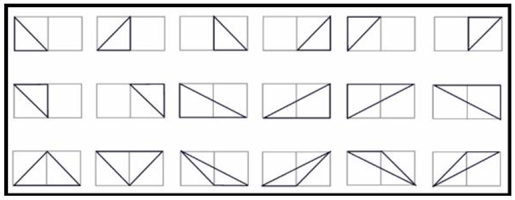
看起來似乎很複雜，所以我們來分析一下
$ 1 \times 2 $ 的格子點中總共有 $ (1 + 1) \times (2 + 1) = 6 $ 個點，任取 3 個相異點的組合數為 $\binom{6}{3} = 20$
這個數字跟答案 18 好像很相近耶!!
觀察一下這 20 個組合中有甚麼是無效的組合，也就是非三角形的組合
發現只要三點共線，這就是無效的
而 $ 1 \times 2 $ 的格子點中，三點共線的組合為上下這 2 條
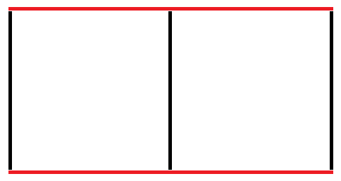
因此， $ {(三角形數量)} = {(總組合數)} - {(三點共線的組合)} $
所以我們現在的目標就是要找出三點共線的組合數
來舉一下例子看看能不能看出甚麼
若有一個 $ 2 \times 3 $ 的格子點，所有共線的情況共有 20 種
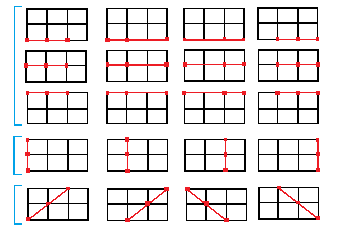
不難發現可以分成三種類別
- 水平共線
- 垂直共線
- 斜的共線
水平和垂直共線我們可以很輕易的得出
- 水平 : 4 個點取 3 個的組合 –> $\binom{4}{3} \times 3 = 12$
- 垂直 : 3 個點取 3 個的組合 –> $\binom{3}{3} \times 4 = 4$
剩下的 斜共線 的部分就會比較麻煩了，因為若是當格子點 size 變大時
我們就必須要找出更多種不同邊長的斜邊共線組合
例如一個 $ 6 \times 8 $ 的格子點，就會要考慮至少下面 3 種 ( 還有一種 $ 2 \times 8 $ 的沒畫出來 )
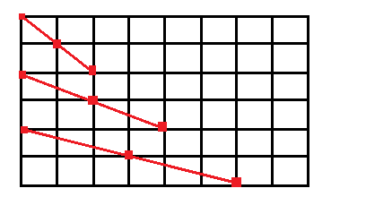
當 size 更大的時候，要考慮的種類就會越多，因為我們要想一下有沒有別的方法可以來解決
思考二
因為我們可以輕易地算出水平與垂直的共線組合數量，但斜線就比較麻煩
接下來我們專注在 找出斜的共線組合
看到這麼多的方塊，各位有沒有一種感覺，感覺好像他們就像積木一樣，可以拼湊起來，用小的堆成大的
這、這、這不就很像 DP 嗎 !! ( Dynamic Programming )
我們來檢驗看看
這是一個 $ 6 \times 8 $ 的格子點，若我們要找出所有斜的共線
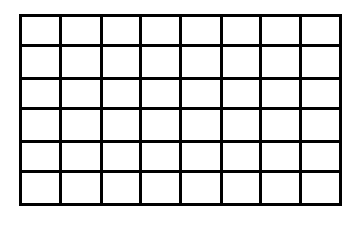
我們可以把它看成是 $ 6 \times 7 $ 的格子點 A
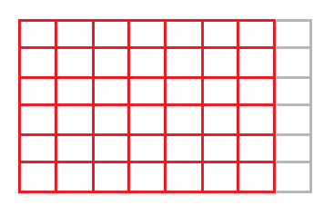
與 $ 5 \times 8 $ 的格子點 B
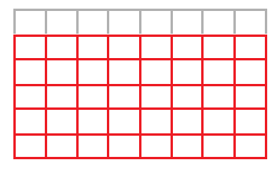
疊起來後為格子點 X ，且中間的那一塊 $ 5 \times 7 $ 格子點 C 會重複堆疊
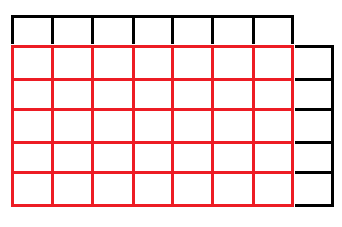
我們可以使用 排容原理 來得到 X 的總斜共線數量
$ {X} = {A} + {B} - {C} $
把 X 和我們要求的格子點做比較
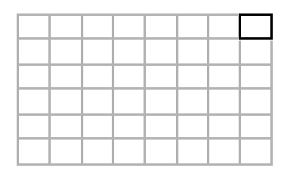
多了右上角那一塊，，因此我們只要知道包含最右上角那個點的斜共線數目，我們就可以得到 $ 6 \times 8 $ 格子點的總斜共線數量
$ {Total 斜共線數量} = {X} + {右上角} = {A} + {B} - {C} + {右上角} $
現在問題變成了 要如何求包含最右上角點的斜共線數量 ?
也就是包含點 P 的斜共線有多少條?
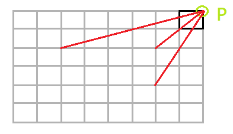
思考三
要求出包含最右上角 P 點的斜共線數量，我們同樣可以使用 排容原理
要注意 思考二 所使用的排容原理要計算的是 : 該格子點中所有斜共線的數量
我們現在要計算的是包含最右上角點 P 的斜共線數量
同樣地例子
我們要找出包含 P 的斜共線數量
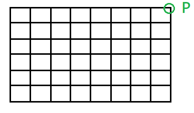
一樣可以分為 A、B 2 部分，其中 X 為疊合後的區域，C 為紅色重疊的部分
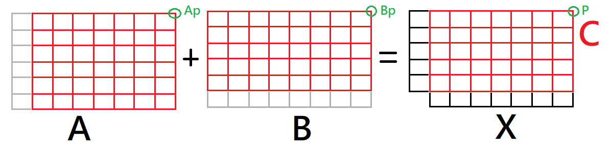
且在 X 中，包含點 P 的斜共線數量就會等於 Ap 在 A 中的斜共線數量 加上 Bp 在 B 中的斜共線數量 減掉 P 在 C 中的斜共線數量 ( 重複的部分)
$ {Xp} = {Ap} + {Bp} - {Cp} $
與原格子點 T 做比較，多了左下角點 K
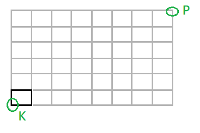
從剛剛的排容原理我們可以得知， Xp 就是在 X 中包含點 P 的斜共線數量
所以要求在 T 中包含點 P 的斜共線數量 ( Tp )，我們只要在檢查 P 與 K 的斜線上是有可以構成三點共線
$ {Tp} = {Xp} + {KP共線組合} $
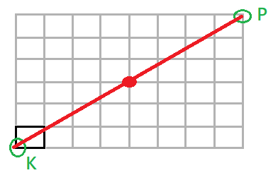
發現在 K、P 中間有一個交點，因此可以形成一個三點共線
這邊我們可以使用 T 的邊長來算最大公因數 ( gcd )，此數值減一就會是 KP 直線中的點可以構成三點共線的數量
例如這個例子是 gcd(6,8) = 2，2 在減一就等於 1，代表只能構成 1 條共線
那為甚麼邊長的 gcd 就會是答案呢?
假設 T 的邊長為 M 與 N
可以整除 M 的正整數為 t1，可以整除 N 的正整數為 t2
代表說 M 邊最多可以被劃分為 t1 個同樣大小部分，N 邊可以被劃分為 t2 個同樣大小部分
若 M 與 N 的最大公因數 t3，代表 M 與 N 可以各自被劃分成 t3 個相等大小的部分
由於將一個線段分為 t3 個部分，會有 t3 + 1 個分點，去掉頭尾端後 ( 就是 P 與 K 點，因為他們是必選的點 )，還剩下 t3 - 1 個點
所以我們還有 t3 - 1 個選擇
例如 M = 56，N = 42
gcd( M, N) = 14，代表可以劃分成 14 個部分，共有 15 個分點，去掉頭尾還剩 14 - 1 個點
所以有 13 個選擇
解法
統整一下剛剛的思考
- $ {(三角形數量)} = {(總組合數)} - {(三點共線的組合)} $
- 三點共線的組合有 3 個類別 : 水平、垂直、斜線
- 水平與垂直好算，所以我們只要特別計算斜線
- 要計算 $ M \times N $ 格子點的所有斜共線，可以使用排容原理
$ {Total 斜共線數量} = {A} + {B} - {C} + {包含最右上角點的斜共線} $ - 由於我們需要得知在 $ M \times N $ 格子點中包含最右上角的點 P 的斜共線數量，所以我們也要特別計算
- 同樣使用排容原理
$ {Total 包含 P 的共線數量} = {Ap} + {Bp} - {Cp} + {gcd(M,N) - 1} $
整理後，解題步驟如下
- 先計算出所有大小的格子點中，包含最右上角點 P 的斜共線個數 (Dynamic Programming)
- 計算出所有大小的格子點中，包含的所有斜共線個數 (Dynamic Programming)
- 給定 M 與 N，就可以計算出結果 ( 邊長 M 的邊會有 M + 1 個點 )，ans 會等於 Total 點組合 - 水平與垂直共線 - 斜共線
$ {Ans} = \binom{M+1}{N+1} - (M+1) \times \binom{N+1}{3} - (N+1) \times \binom{M+1}{3} - 斜共線(M,N) $
程式碼
1 |
|
優化
由於列舉格子點的過程有對稱性，所以在 Class Solution 的 init method 中，可以減少一半的計算量
1 | void init(void) |
UVa 測資
請低調服用 : UVa 12075 測資